Digitalisasi Data Peta
[ Download PDF
A4
Letter ]
Digitalisasi adalah salah satu tugas umum yang seorang spesialis GIS harus lakukan. Seringkali sebagian besar GIS time habis dalam digitalisasi data raster untuk membuat layer vector yang anda gunakan dalam analisa anda. QGIS punya kemampuan yang kuat dalam hal digitalisasi dan pengeditan on-screen yang akan kita pelajari di tutorial ini
Tinjauan Tugas
Kita akan menggunakan sebuah peta raster topografi dan membuat beberapa layer vector mewakili fitur-fitur di sekitar sebuah taman.
Skill lain yang akan anda pelajari
Prosedur
Akses . Cari lokasi file yang sudah diunduh BX24_GeoTifv1-02.tif dan klik Open.
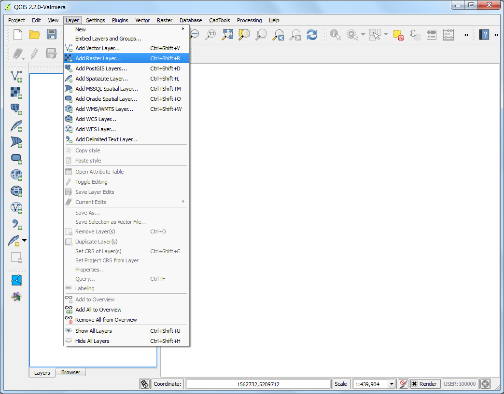
Ini adalah sebuah file raster yang besar dan anda mungkin sadar bahwa jika anda men-zoom atau pan di sekitar peta, peta tersebut mengkonsumsi sedikit waktu untuk merender gambar atau citra. QGIS menawarkan sebuah solusi sederhana untuk membuka raster lebih cepat menggunakan Image Pyramids . QGIS menghasilkan ubin atau tiles yang belum dirender pada resolusi yang berbeda dan inilah yang diperlihatkan pada anda bukan raster yang komplit. Hal ini membuat navigasi peta menjadi cepat dan responsif. Klik kanan layer BX24_GeoTifv1-02 dan pilih Properties.

Pilih tab Pyramids. Tahan Ctrl dan pilih semua resolusi yang ditawarkan pada panel Resolutions . Biarkan opsi lain sebagaimana adanya dan klik Build pyramids . Ketika proses selesai, klik OK.
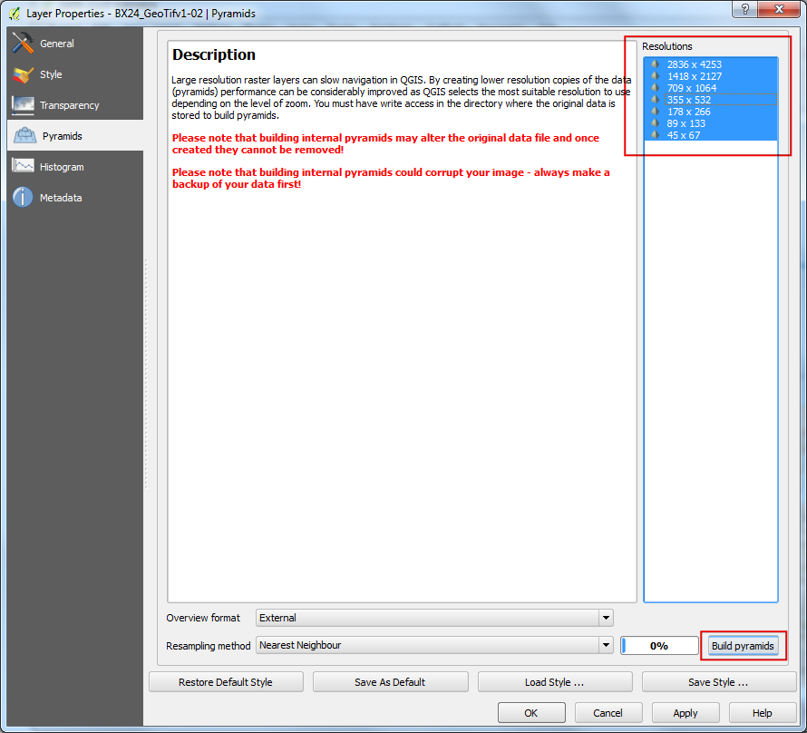
Kembali pada jendela utama QGIS, gunakan tool Zoom untuk mencari lokasi area Hagley Park di Christchurch. Jadi ini adalah taman yang kita digitalisasi.
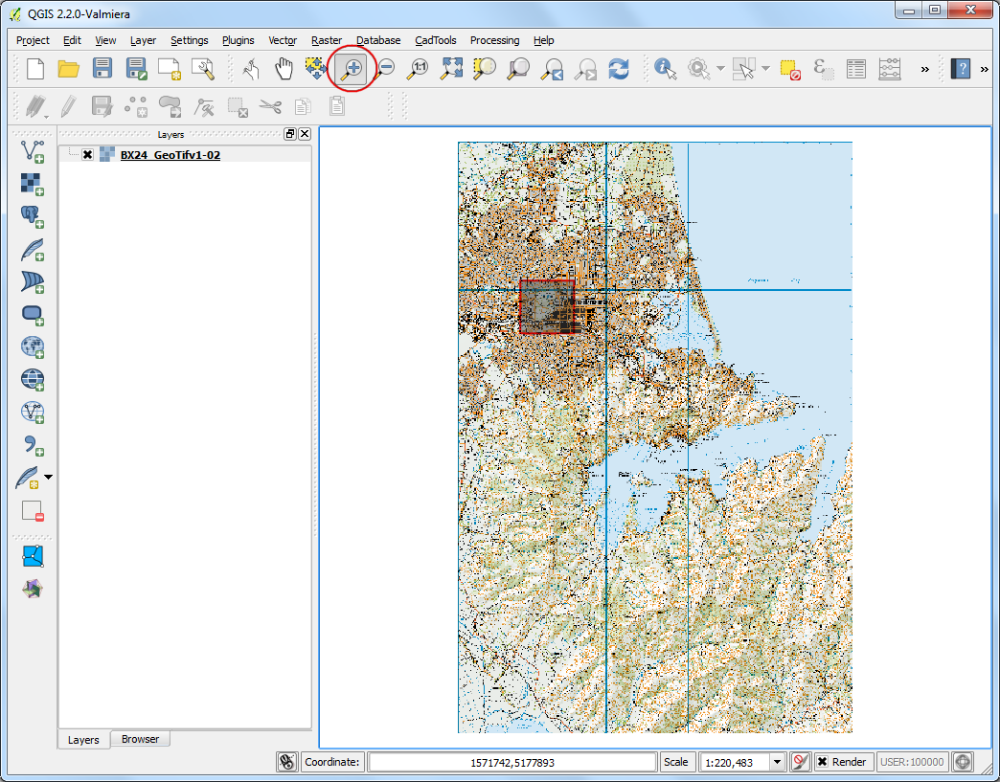
Sebelum kita mulai, kita perlu mensetting awal Digitizing Options . Akses .
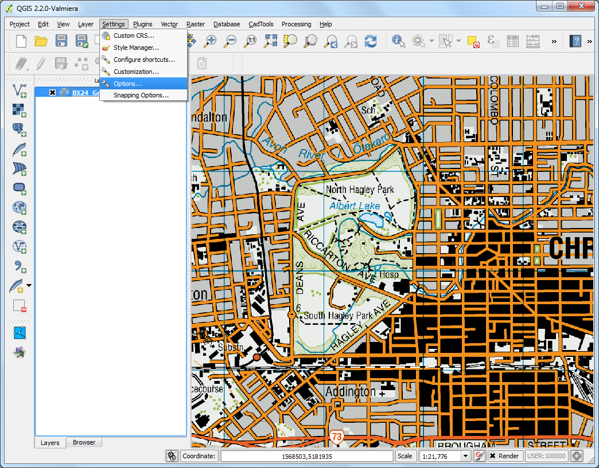
Pilih tab Digitizing di dialog Options . Atur Default snap mode ke To vertex and segment . Ini akan membuatnya secara otomatis terpasang atau bisa disebut snap pada verteks terdekat atau segment garis. Saya juga lebih suka untuk mengatur Default snapping tolerance dan Search radius for vertex edits dalam pixel ketimbang map unit. Ini akan memastikan jarak snap tetap konstan tidak terpengerauh level zoom. Bergantung pada resolusi layar komputer anda, anda mungkin memilih nilai yang pantas atau cocok. Klik OK.
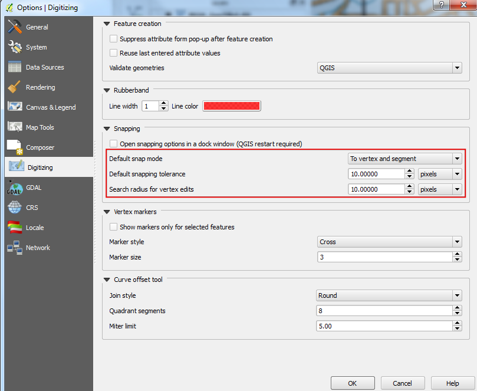
Sekarang kita siap untuk mulai digitalisasi. Pertama-tama kita akan menciptakan layer jalan dan mendigitalisasi jalan di sekitar area taman. Pilih . Anda juga bisa memilih untuk membuat New Shapefile Layer... jika anda lebih nyaman dengan ini, Spatiallite adalah sebuah format database terbuka seperti format geodatabase ESRI. Database SpatialLite terkandung dalam sebuah file tunggal pada hard drive anda dan dapat mengandung tipe-tipe spasial yang berbeda (titik/poin, garis, poligon) sebagaimana layer non-spasial. Hal ini memudahkan dalam memindahkannya di sekitar ketimbang beberapa shapefile yang terpisah. Dalam tutorial ini, kita membuat beberapa layer poligon dan sebuah layer garis, sehingga sebuah database Spatialite dapat menjadi lebih cocok. Anda selalu dapat membuka sebuah layer spatialite dan menyimpannya sebagai shapefile atau format lain sesuai dengan yang anda inginkan
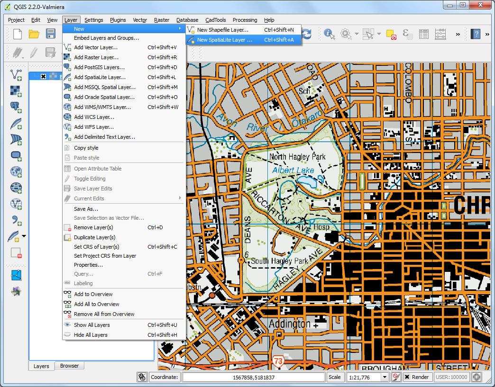
Pada dialog New Spatialite Layer, klik tombol ... dan simpan database spatialite yang baru bernama nztopo.sqlite . Pilih Layer name sebagai Roads dan pilih Line pada Type . Peta topografi dasar dalam CRS EPSG:2193 - NZGD 2000` , jadi kita bisa memilih CRS yang sama untuk layer jalan kita. Beri tanda cek pada kotak Create an autoincrementing primary key . Ini akan menghasilkan kolom bernama pkuid di dalam tabel attribut dan memasangkan id numerik yang unik secara otomatis ke setiap fitur. Saat membuat sebuah layer GIS, anda harus memutuskan pada attribut yang setiap fitur akan miliki. Karena ini adalah layer jalan, kita akan punya 2 atribut dasar - Nama dan Kelas. Masukkan Name pada Name dari attribut di bagian New attribute dan klik Add to attribute list.
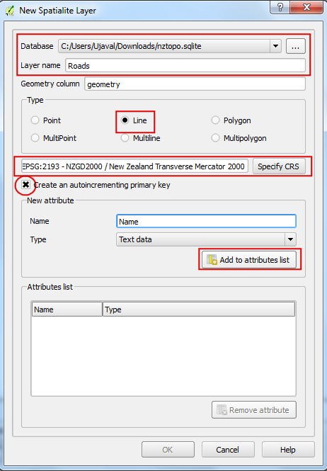
Sama halnya dengan membuat attribut yang baru Class dengan tipe Text data . Klik:guilabel:OK.
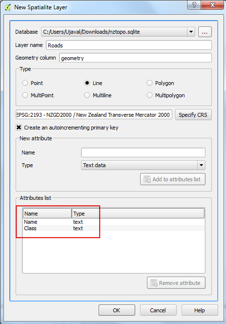
Ketika layer sudah dimunculkan, klik tombol Toggle Editing untuk membuat layer dalam posisi pengeditan
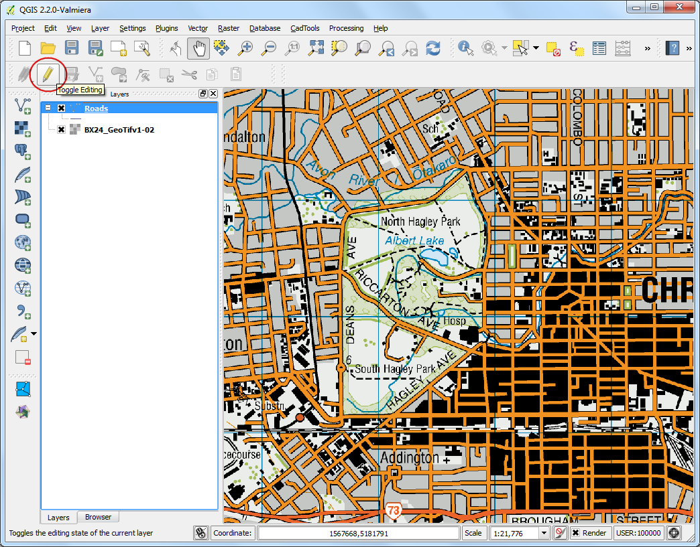
Klik tombol Add feature . Klik pada kanvas peta untuk menambah verteks atau simpul baru. Menambah verteks baru spenjang fitur jalan. Ketika anda sudah mendigitalisasi sebuah segment jalan, klik kanan untuk mengakhiri fitur
Catatan
Anda dapat mengunakan roda scroll pada mouse utnuk menzoom ke dalam atau ke luar saat proses digitalisasi. Anda dapat menekan dan menahan tombol scroll dan menggerakkan mouse untuk melakukan pan.

Setelah anda meng-klik kanan to mengakhiri fitur, anda akan mendapat dialog yang muncul bernama Attributes . Di sini anda dapat memasukkan attribut dari fitur yang baru saja dibuat. Sejak pkuid adalah kolom auto-increminating, anda tidak akan bisa memasukkan nilai secara manual. Biarkan ini kosong dan masukkan nama jalan sesuai yang muncul di peta topografi. Secara opsional, tetapkan nilai dari kelas jalan. Klik OK.

Style awal dari layer garis yang baru adalah sebuah garis tipis. Mari kita ubah sehingga kita dapat lebih jelas melihat fitur yang terdigitalisasi pada kanvas. Klik kanan pada layer Roads dan pilih Properties.
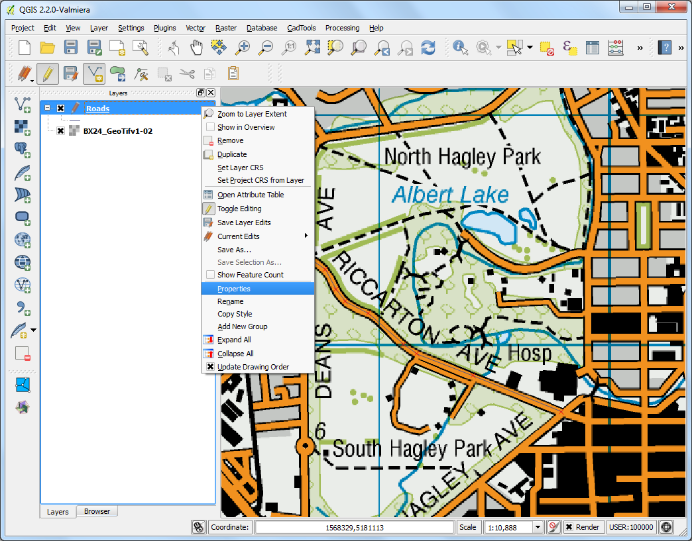
Pilih tab Style pada dialog:guilabel:Layer Properties. Pilih sebuah style garis yang lebih tebal seperti Primary dari style yang sudah terdifinisi. Klik OK.
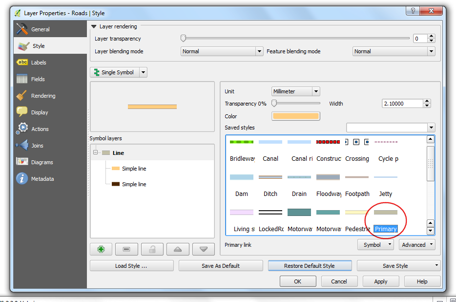
Sekarang anda akan melihat fitur jalan yang sudah terdigitalisasi secara jelas. Klik Save Layer Edits untuk mengaktualisasikan fitur baru pada disk
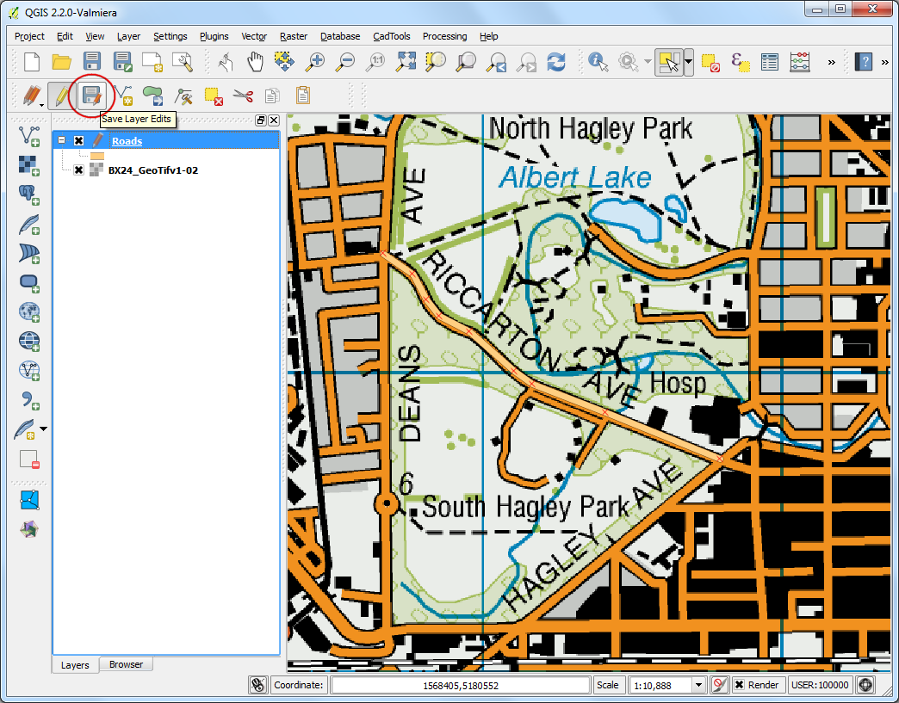
Sebelum kita mendigitalisasi jalan yang tersisa, penting untuk mengupdate beberapa aturan lain untuk menghasilkan layer bebas error. Akses .

Pada dialog Snapping Options, Beri tanda cek pada Enable topological editing . Opsi ini akan memastikan bahwa batas yang sama dipertahankan dengan baik pada layer poligon. beri tanda cek juga pada Enable snapping on intersection yang membolehkan anda untuk snap pada sebuah persimpangan pada layer latar belakang
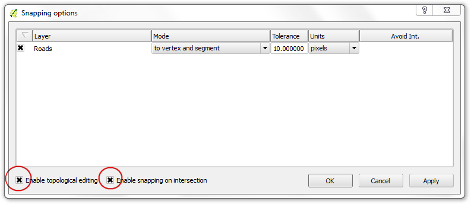
Sekarang anda dapat mengklik tombol Add feature dan mendigitalisasi jalan-jalan lain di sekitar jalan. Pastikan untuk mengklik Save Edits setelah anda menambah fitur baru untuk menyimpan pekerjaan anda. Sebuah tool sederhana akan menolong anda dalam digitalisasi adalah Node Tool , Klik tombol Node Tool button.
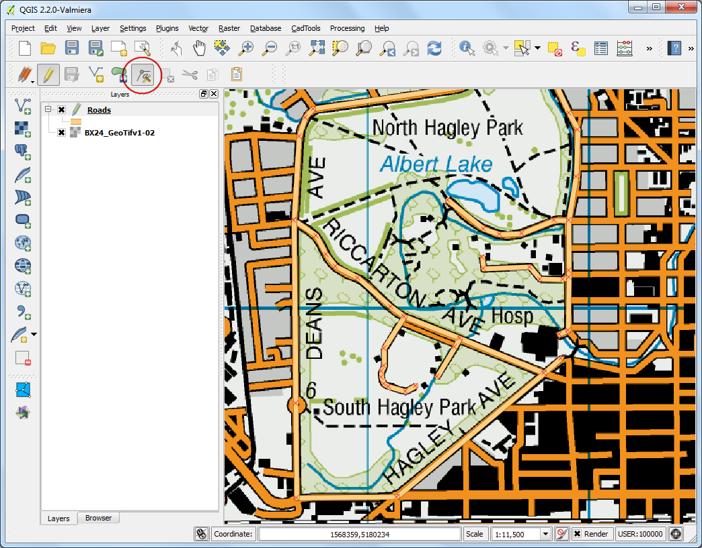
Ketika node tool sudah aktif, klik pada sembarang fitur untuk memperlihatkan simpul-simpul. Klik pada sembarang verteks untuk memilihnya. Verteks akan merubah warna ketika itu terpilih. Sekarang anda dapat mengklik dan mendrag mouse untuk menggerakkan verteks. Ini menjadi berguna saat anda ingin melakukan perubahan setelah sebuah fitur sudah ditambahkan. Anda dapat juga menghapus verteks terpilih dengan mengklik Delete (Option+Delete untuk mac)
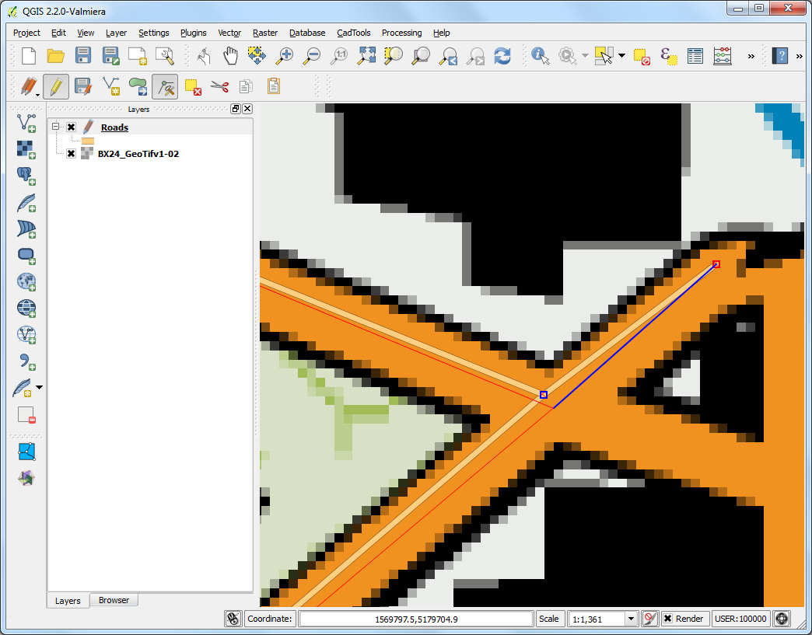
Ketika anda sudah selesai mendigitalisasi semua jalan, klik tombol Toggle Editing

Sekarang kita akan membuat sebuah layer poligon mewakili batas-batas taman. Akses . pilih database nztopo.sqlite` dari menu drop down. Beri nama layer baru sebagi Parks. Pilih Polygon sebagai Type . Buat sebuah attribut baru bernama Name . Klik OK.

Klik tombol Add feature dan klik pada kanvas peta untuk menambah sebuah verteks poligon. Digitalisasikan poligon mewakili taman. Pastikan anda snap pada simpul jalan jadi tidak ada jarak antara poligon taman dan garis jalan. Klik kanan untuk menyelesaikan poligon.

Masukkan nama taman pada pop-up Attributes

Layer poligon menawarkan pengaturan lain yang berguna yang disebut Avoid intersections of new polygons. Akses . Aktifkan kolom Avoid Int di kolom pada baris untuk layar Parks . klik OK.
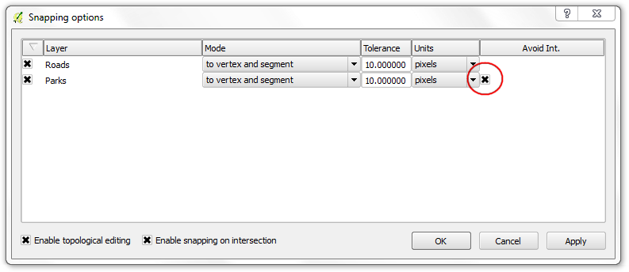
Sekarang klik Add feature untuk menambah sebuah poligon. Dengan Avoid intersections of new polygons, anda akan dapat dengan cepat mendigitalisasi sebuah poligon baru dengan tanpa khwatir snapping tepat pada poligon-poligon tetangga.

Klik kanan untuk menyelesaikan poligon dan masukkan attributnya. Secara magis poligon baru mengecil dan tersnap dengan akurat pada batas poligon-poligon tetangga! Hal ini sangat berguna saat mendigitalisasi batas-batas kompleks di mana anda tidak harus begitu akurat dan masih memiliki poligon yang benar secara topografi. Klik Toggle Editing untuk menyelesaikan pengeditan layer Parks .

Sekarang waktunya untuk mendigitalisasi sebuah layer bangunan. Buatlah sebuah layer poligon baru bernama Buildings dengan mengakses .

Ketika layer Buildings sudah ditambahkan, nonaktifkan layer Parks dan Roads sehingga peta topografi dasar menjadi terlihat. Pilih layer Buildings dan klik Toggle Editing.
Pendigitalisasian bangunan dapat menjadi tugas yang sangat membebani. Dikarenakan susahnya untuk menambah simpul-simpul secara manual sehingga ujung-ujungnya tegak lurus dan membentuk segi empat. Kita akan menggunakan sebuah plugin bernama Rectangles Ovals Digitizing untuk membantu dalam tugas ini. Lihat docs/using_plugins untuk tahu bagaimana mencari dan menginstall plugins. Ketika plugin Rectangles Ovals Digitizing sudah terinstall, anda akan melihat toolbar baru muncul di atas kanvas

Zoom pada area dengan bangunan dan klik tombol Rectangle by Extent . Klik dan drag mouse untuk menggambar sebuah segi empat yang sempurna. Dengan cara yang sama, tambahkan bangunan tersisa.
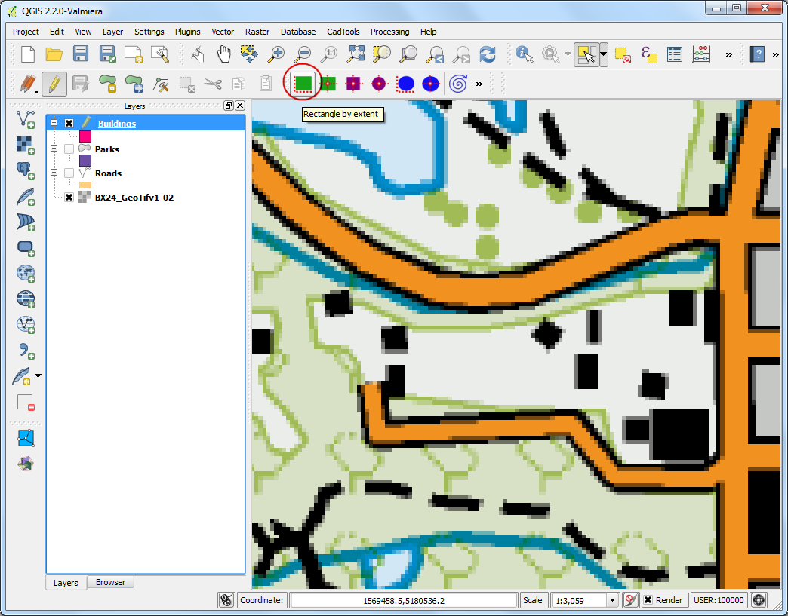
Anda akan melihat bahwa sejumlah bangunan tidak vertikal. Kita butuh untuj menggambar sebuah segi empat pada sebuah sudut untuk mencocokkan footprint bangunan. Klik Rectangle from center.

Klik di bagian tengah bangunan dan drag mouse untuk menggambar segiempat vertikal

Kita perlu untuk merotasi segi empat ini untuk mencocokkan dengan citra pada peta topo. Alat untuk rotasi tersedia pada toolbar Advanced Digitizing . Klik kanan pada area kosong di bagian toolbar dan aktifkan toolbar Advanced Digitizing toolbar.

Klik tombol Rotate Feature(s) button.

Gunakan tool Select Single feature untuk memilih poligon yang ingin anda rotasi. ketika tool Rotate Feature(s) sudah diaktifkan, anda akan melihat tanda plus si tengah-tengah poligon. Klik tepat pada tanda plus dan drag mouse anda dengan menahan tombol kiri mouse di saat bersamaan. Sebuah preview dari fitur yang terotasi akan muncul. Lepaskan klik dan tahan tadi pada mouse ketika poligon sudah lurus dengan footprint bangunan.

Simpan editan layer dan klik Toggle Editing ketika anda sudah selesai dalam pendigitalisasian semua bangunan. Anda dapat mendrag layer-layer untuk mengubah urutan tampilan.

Tugas digitalisasikan sekarang sudah selesai. Anda dapat bermain-main dengan opsi styling dan labelling pada properti layer untuk menghasilkan sebuah peta yang terlihat bagus dari data yang sudah anda hasilkan